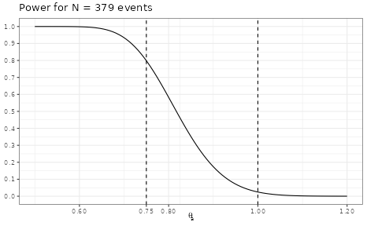
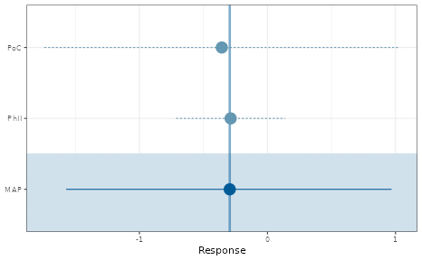
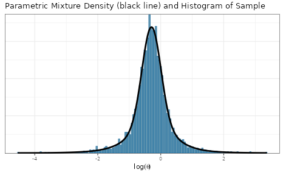
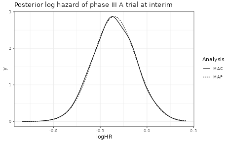

Probability of Success with Co-Data
Use of Co-Data in Clinical Trails with RBesT
Sebastian Weber
2023-08-22
Source:vignettes/PoS_codata.Rmd
PoS_codata.RmdThe probability of success is a very useful concept to assess the chances of success of a trial while taking uncertainties into account. In this document we briefly introduce the needed formal details, describe an example data set and then demonstrate various ways of how the probability of success concept can be applied to increasingly complex data situations.
Introduction
The co-data concept has been introduced in [1]. It differs from the use of historical data in that the approach makes use of contemporary data. A meta-analytic-predictive (MAP) analysis assumes that historical data is known at the time-point of specyfing the analysis and is as such a retrospective summary of available data. The MAP prior is then combined with the current trial data. A co-data approach extends this sequential procedure to a meta-analytic-combined (MAC) analysis. In the MAC approach all available data is analyzed in a single step - that is, historical and concurrent data is combined in a single inference step. Both approaches MAP and MAC yield exactly the same results as is demonstrated in the appendix at the bottom. An example for a co-data scenario in drug development is the simultaneous execution of twin phase III trails for registriation. In such a setting, a futility analysis at an interim analysis may take historical and all contemporary data into account in a co-data approach. This example has been discussed in [1] using the probability of success (PoS) as metric to assess futility at an interim analysis and is discussed here in detail.
The key property of the probability of success metric is the consideration of uncertainty in parameters conditional on available data. In contrast, the conditional power (CP) calculates the frequency a given experemintal design will be successful for a known value of the parameters. For example, in a 1-sample experiment with a one-sided success criterion the trial is successful if the collected data \(y_N\) of sample size \(N\) exceeds some critical value \(y_c\); recall that the critical value \(y_c\) is determined by the success criterion, prior and sample size when evaluated. Assuming that the sampling model of the data is \(p(y|\theta)\), then
\[ CP_N(\theta) = \int I(y_N > y_c) \, p(y_N|\theta) \, dy_N.\]
The integration over the data \(y_N\) comprises all possible outcomes of the trial. Note that before the start of the trial, \(CP_N(\theta_0)\) is the type I error rate under the conventional null hypothesis (\(\theta=\theta_0\)) and \(CP_N(\theta_a)\) the power of the trial under the alternative (\(\theta=\theta_a\)). At an interim analysis at sample size \(n_I\), the conditional power is then evaluated conditional on the observed data so far (the \(n_I\) measurements) while the remaining sample size (\(N-n_I\)) is random and distributed according to \(p(y|\theta)\) with \(\theta\) set to some known value,
\[ CP_{N-n_I}(\theta|y_{n_I}) = \int I(y_{n_I} + y_{N-n_I} = y_N > y_c|y_{n_I}) \, p(y_{N-n_I}|\theta) \, dy_{N-n_I}.\]
The known value can be set equal to the observed point estimate at the interim, \(CP_{N-n_I}(\hat{\theta}_{I}|y_{n_I})\), or to the assumed true alternative, \(CP_{N-n_I}(\theta_a|y_{n_I})\), used to plan the trial.
The probability of success in contrast assigns \(\theta\) a distribution and marginalizes the conditional power over this distribution. In absence of additional trial external information this distribution is the posterior for \(p(\theta|y_{n_I})\) obtained from the prior for \(p(\theta)\) and the data collected up to the interim,
\[ PoS_I = \int CP_{N-n_I}(\theta|y_{n_I}) \, p(\theta|y_{n_I}) \, d\theta.\]
However, our knowledge about \(\theta\) can be refined if other data-sources like completed (historical) or concurrent trials are available,
\[ PoS_{I,H,...} = \int CP_{N-n_I}(\theta|y_{n_I}) \, p(\theta|y_{I},y_{H},...) \, d\theta.\]
It is important to note that the conditional power is always evaluated with respect to the trial data (and prior) only. Thus, additional data-sources are not part of the analysis of the trial. In practice this means that the probability of success is usually calculated for a trial which uses non-informative priors, but at interim we may use additional data-sources to refine our knowledge on \(\theta\) which will not be part of the trial analysis.
Example Data Scenario
In the following the hypothetical example as in [1] is discussed. The assumed endpoint is time-to-event, which is analyzed using the normal approximation of the log-rank statistic for comparing two groups. Under a 1:1 randomization the standard error of the log-hazard ratio scales with the number of events as \(2/\sqrt{N_{events}}\). This implies a corresponding sampling standard deviation of \(2\), which defines the unit information prior used later on in the analysis. The historical data considered is a proof of concept and a phase II trial. The twin phase III studies are event driven. Each trial stops whenever a total of \(379\) events is reached and an interim is planned whenever at least \(150\) events have occured. The assumed true hazard ratio used for the design of the trial is \(0.8\).
Example data:
trials <- data.frame(study = c("PoC", "PhII", "PhIII_A", "PhIII_B"),
deaths = c( 8, 85, 162, 150),
HR = c( 0.7, 0.75, 0.83, 0.78),
stringsAsFactors = FALSE
)
## under the normal approximation of the log-HR, the sampling sd is 2
## such that the standard errors are sqrt(4/events)
trials <- trials %>%
mutate(logHR=log(HR), sem=sqrt(4/deaths))
kable(trials, digits=2)| study | deaths | HR | logHR | sem |
|---|---|---|---|---|
| PoC | 8 | 0.70 | -0.36 | 0.71 |
| PhII | 85 | 0.75 | -0.29 | 0.22 |
| PhIII_A | 162 | 0.83 | -0.19 | 0.16 |
| PhIII_B | 150 | 0.78 | -0.25 | 0.16 |
The remaining outline of the vignette is to first evaluate the design properties of the trials, then calculate the probability of success at interim for the A trial only (using only trial A data). Next, the probability of success is calculated using in addition the historical data. Subsequently, the probability of success for trial A is calculated also using the historical data and the concurrent phase III data of trial B. Finally, the overall probability of success is calculated, which is defined by the joint success of both trials. In the appendix the equivalence of the MAP and MAC approach is demonstrated.
Statistical Trial Design Considerations
Key design choices:
- time-to-event endpoint
- phase III trials stop at target # of events 379
- null hypothesis of no difference in HR, \(\theta_0 = 1.0\)
- one-sided \(\alpha = 0.025\)
- alternative hypothesis assumes true HR of \(\theta_a=0.75\)
- interim when at least 150 events reached
Historical data:
- promising internal PoC
- promising phase II
Co-data:
- two phase III trials run in parallel \(\Rightarrow\) each phase III trial is concurrent with the other
Define design choices
Nev <- 379
alt_HR <- 0.75
alt_logHR <- log(alt_HR)
alpha <- 0.025Power calculation
Here we use the unit information prior as non-informative prior and define it using the mean & effective sample size (ESS) specification:
## Univariate normal mixture
## Reference scale: 2
## Mixture Components:
## comp1
## w 1
## m 0
## s 2Define conditional power for the overall trial:
success_crit <- decision1S(1-alpha, 0)
## let's print the defined criterion
success_crit## 1 sample decision function
## Conditions for acceptance:
## P(theta <= 0) > 0.975
design <- oc1S(unit_inf, Nev, success_crit, sigma=2)Under the alternative these design choices result in 80% power
design(alt_logHR)## [1] 0.7986379The impact of the unit-information prior is minimal which can be seen by comparing to the frequentist calculation:
power.t.test(n=Nev, delta=-1*alt_logHR, sd=2, type="one.sample", sig.level=0.025, alternative="one.sided")##
## One-sample t test power calculation
##
## n = 379
## delta = 0.2876821
## sd = 2
## sig.level = 0.025
## power = 0.7976343
## alternative = one.sidedWith RBesT we can explore the conditional power for a range of alternatives:
ggplot(data.frame(HR=c(0.5, 1.2)), aes(HR)) +
stat_function(fun=compose(design, log)) +
vline_at(c(alt_HR, 1.0), linetype=I(2)) +
scale_y_continuous(breaks=seq(0,1,by=0.1)) +
scale_x_continuous(breaks=c(alt_HR, seq(0,1.2,by=0.2))) +
ylab(NULL) + xlab(expression(theta[a])) +
ggtitle(paste("Power for N =", Nev, "events"))
Critical value
The critical value determines at which observed logHR we just conclude that the success criterion is fulfilled.
design_crit <- decision1S_boundary(unit_inf, Nev, success_crit, sigma=2)
design_crit## [1] -0.2017185
exp(design_crit)## [1] 0.8173249We can check this:
success_crit(postmix(unit_inf, m=design_crit, n=379))## Using default prior reference scale 2## [1] 1Ok, when observing the critical value, we get a success.
Now, what if we observe a 1% worse result?
## Using default prior reference scale 2## [1] 0No success then \(\Rightarrow\) this is the critical boundary value.
PoS at interim for phase III trial A only
No use of historical information
Posterior of treatment effect at interim. The trial uses a non-informative prior for the treatment effect:
interim_A <- postmix(unit_inf, m=trials$logHR[3], se=trials$sem[3])
interim_A## Univariate normal mixture
## Reference scale: 2
## Mixture Components:
## comp1
## w 1.0000000
## m -0.1851865
## s 0.1566521Now we are interested in the PoS at trial completion. The prior to use for the analysis of the second half is given by the data collected so far.
interim_pos_A <- pos1S(interim_A, Nev-trials$deaths[3], success_crit, sigma=2)The returned function can now calculate the PoS assuming any distribution on the treatment effect. In case we do not use any historical information, then this is just the interim posterior:
interim_pos_A(interim_A)## [1] 0.4465623The above command integrates the conditional power over the uncertainty which we have about the treatment effect as defined above for \(PoS_I\).
The conditional power and the operating characteristics of a trial coincide whenever we do not condition on any observed data. The key difference of the conditional power as compared to the probability of success is that it assumes a known value for the parameter of interest. This can be seen as follows: First define the conditional power which is conditional on the observed data, \(CP_{N-n_I}(\theta|y_{n_I})\):
interim_oc_A <- oc1S(interim_A, Nev-trials$deaths[3], success_crit, sigma=2)The conditional power assuming the alternative is true (a HR of 0.75):
interim_oc_A(alt_logHR)## [1] 0.708769In case there is no uncertainty of the treatment effect (here \(se=10^-4\)), then this result agrees with the probability of success calculation:
## [1] 0.7087689For trial B the calculation is:
interim_B <- postmix(unit_inf, m=trials$logHR[4], se=trials$sem[4])
interim_pos_B <- pos1S(interim_B, Nev-trials$deaths[4], success_crit, sigma=2)
interim_pos_B(interim_B)## [1] 0.6411569Use of historical information - MAP approach
However, we have historical information of which we can take advantage at the interim for a better informed decision.
Our data before the phase III trials includes the PoC and the phase II trial. We now derive from these a MAP prior; recall that the MAP prior is the prediction of the log-hazard ratio of a future trial:
base <- trials[1:2,]
set.seed(342345)
base_map_mc <- gMAP(cbind(logHR, sem) ~ 1 | study,
family=gaussian,
data=base,
weights=deaths,
tau.dist="HalfNormal", tau.prior=0.5,
beta.prior=cbind(0, 2))
forest_plot(base_map_mc, est="MAP")
base_map <- automixfit(base_map_mc)
plot(base_map)$mix + xlab(expression(log(theta)))
base_map## EM for Normal Mixture Model
## Log-Likelihood = -3080.927
##
## Univariate normal mixture
## Reference scale: 2
## Mixture Components:
## comp1 comp2
## w 0.7233863 0.2766137
## m -0.2857441 -0.3098386
## s 0.3224104 0.9860875At the interim we have even more knowledge available on the treatment effect through the interim data itself which we can include into the MAP prior:
interim_A_combined <- postmix(base_map, m=trials$logHR[3], se=trials$sem[3])The PoS for this posterior at interim (representing historical and interim data collected) is:
interim_pos_A(interim_A_combined)## [1] 0.4807369Note that we have not redefined interim_pos_A, such that
this calculates the PoS for the phase III A trial taking into account
that the final analysis will use a non-informative prior.
For trial B the calculation is:
interim_B_combined <- postmix(base_map, m=trials$logHR[4], se=trials$sem[4])
interim_pos_B(interim_B_combined)## [1] 0.6649225Use of historical information - MAC approach
However, there is even more information which can be used here, since the phase III result of trial B is also available:
interim_map_mc <- update(base_map_mc, data=trials)Now the trial B specific posterior at interim is
kable(fitted(interim_map_mc), digits=3)| mean | sd | 2.5% | 50% | 97.5% | |
|---|---|---|---|---|---|
| PoC | -0.247 | 0.234 | -0.771 | -0.240 | 0.216 |
| PhII | -0.255 | 0.153 | -0.576 | -0.250 | 0.044 |
| PhIII_A | -0.216 | 0.124 | -0.455 | -0.218 | 0.032 |
| PhIII_B | -0.240 | 0.130 | -0.499 | -0.237 | 0.013 |
which we can extract as:
- obtain posterior (which we restrict to the first 4 columns)
interim_map_post <- as.matrix(interim_map_mc)[,1:4]
dim(interim_map_post) # posterior is given as matrix: iteration x parameter## [1] 4000 4
head(interim_map_post, n=3)## parameters
## iterations theta[1] theta[2] theta[3] theta[4]
## [1,] -0.1593264 -0.07647811 -0.19873600 -0.1168811
## [2,] -0.2307407 -0.46953690 -0.11706358 -0.1222869
## [3,] -0.3839539 -0.26403940 -0.02395107 -0.2883597- turn MCMC posterior sample into parametric mixture
interim_A_allcombined <- automixfit(interim_map_post[,"theta[3]"])- and finally evaluate the PoS
interim_pos_A(interim_A_allcombined)## [1] 0.506154which aligns with the published result under the assumption of full exchangeability.
For trial B computations are:
interim_B_allcombined <- automixfit(interim_map_post[,"theta[4]"])
interim_pos_B(interim_B_allcombined)## [1] 0.6446309Differential discounting
Differential discounting allows to weight different data-sources differently. For example, we may assume greater heterogeneity for the historical data in comparison to the twin phase III trials.
Assign data to historical (2) and concurrent data strata (1):
trials <- trials %>% mutate(stratum=c(2, 2, 1, 1))
kable(trials, digits=2)| study | deaths | HR | logHR | sem | stratum |
|---|---|---|---|---|---|
| PoC | 8 | 0.70 | -0.36 | 0.71 | 2 |
| PhII | 85 | 0.75 | -0.29 | 0.22 | 2 |
| PhIII_A | 162 | 0.83 | -0.19 | 0.16 | 1 |
| PhIII_B | 150 | 0.78 | -0.25 | 0.16 | 1 |
set.seed(435345)
interim_diff_map_mc <- gMAP(cbind(logHR, sem) ~ 1 | study,
tau.strata=stratum,
family=gaussian,
data=trials,
weights=deaths,
tau.dist="HalfNormal", tau.prior=c(0.5, 1),
beta.prior=cbind(0, 2))
interim_diff_map_post <- as.matrix(interim_diff_map_mc)[,1:4]
interim_A_diff_allcombined <- automixfit(interim_diff_map_post[,"theta[3]"])
interim_B_diff_allcombined <- automixfit(interim_diff_map_post[,"theta[4]"])
interim_pos_A(interim_A_diff_allcombined)## [1] 0.4879023
interim_pos_B(interim_B_diff_allcombined)## [1] 0.6358335PoS for both phase III trials being successful
So far we have only calculated the individual PoS per trial, but more interesting is the overall PoS for both trials being successful.
Recall, the PoS is the conditional power integrated over an assumed true effect distribution. Hence, we had for trial A:
interim_pos_A(interim_A)## [1] 0.4465623As explained, the conditional power is the operating characerstic of a design when conditioning on the already observed data:
interim_oc_A <- oc1S(interim_A, Nev-trials$deaths[3], success_crit, sigma=2)The PoS is then the integral of the conditional power over the parameter space \(\theta\) representing our knowledge. This integral can be evaluated in a Monte-Carlo (MC) approach as
\[ PoS_I = \int CP_{N-n_I}(\theta|y_{n_I}) \, p(\theta|y_{n_I}) \, d\theta \approx \frac{1}{S} \sum_{i=1}^S CP(\theta_i),\]
whenever we have a sample of \(p(\theta|y_{n_I})\) of size \(S\)… which we have:
## [1] 0.4479449This is an MC approach to calculating the PoS.
When now considering the probability for both trials being successful we have to perform an MC integration over the joint density \(p(\theta_A,\theta_B|y_{n_{I_A}},y_{n_{I_B}})\)
\[ \begin{aligned} PoS &= \iint CP_{N-n_{I_A}}(\theta_A|y_{n_{I_A}}) \, CP_{N-n_{I_B}}(\theta_B|y_{n_{I_B}})\, p(\theta_A,\theta_B|y_{n_{I_A}},y_{n_{I_B}}) \, d\theta_A d\theta_B \\ & \approx \frac{1}{S} \sum_{i=1}^S CP_{N-n_{I_A}}(\theta_{A,i}|y_{n_{I_A}}) \, CP_{N-n_{I_B}}(\theta_{B,i}|y_{n_{I_B}}). \end{aligned} \]
Thus we need to also get the conditional power for trial B at interim…
interim_oc_B <- oc1S(interim_B, Nev-trials$deaths[4], success_crit, sigma=2)…and integrate over the posterior samples (differential discounting case)
mean(interim_oc_A(interim_diff_map_post[,"theta[3]"]) * interim_oc_B(interim_diff_map_post[,"theta[4]"]))## [1] 0.3372824which is slightly larger than assuming independence:
interim_pos_A(interim_A) * interim_pos_B(interim_B)## [1] 0.2863165This is due to dependence of the posteriors
## theta[3] theta[4]
## theta[3] 1.0000000 0.2897837
## theta[4] 0.2897837 1.0000000For the full exchangeability case we have
mean(interim_oc_A(interim_map_post[,"theta[3]"]) * interim_oc_B(interim_map_post[,"theta[4]"]))## [1] 0.3557928Summary
We have now calculated with increasing complexity the probability of success for various data constellations. As new trials are only conducted whenever previous trial results were positive, it is important to take note of the potential selection bias. Moreover, adding more historical data sources in this situation will likely increase the probability of success as illustrated by this summary of our preceding calculations.
Phase III trial A:
## only interim data of trial A
interim_pos_A(interim_A)## [1] 0.4465623
## in addition with prior historical data PoC & phase II data
interim_pos_A(interim_A_combined)## [1] 0.4807369
## finally with the interim data of the phase III B
interim_pos_A(interim_A_allcombined)## [1] 0.506154Phase III trial B:
## only interim data of trial B
interim_pos_B(interim_B)## [1] 0.6411569
## in addition with prior historical data PoC & phase II data
interim_pos_B(interim_B_combined)## [1] 0.6649225
## finally with the interim data of the phase III A
interim_pos_B(interim_B_allcombined)## [1] 0.6446309Appendix: MAP and MAC equivalence
In the preceeding sections we have used MAP and MAC equivalence already. The proof for the equivalence is presented reference in [2]. The formal deriavtion is shown at the end of this section
While MAP and MAC provide the exact same results, the difference is a sequential vs a joint analysis as (see also [2]):
- MAP: Summarize historical information as MAP and then update the MAP
with the trial result (MCMC, then
postmix). - MAC: Directly summarize historical information and trial result in a single step (only MCMC on all data).
The two results above using MAP and MAC did not line up. The reason here is that the MAP approach used the historical data and the phase III trial A interim data only. In contrast, the MAC approach used the historical data and interim phase III data of both trials. To show the equivalence we need to align this mismatch of used data.
Run gMAP with base data and produce a large MCMC sample
(10 chains) to get a very high precision.
base_map_mc_2 <- gMAP(cbind(logHR, sem) ~ 1 | study,
family=gaussian,
data=base,
weights=deaths,
tau.dist="HalfNormal", tau.prior=0.5,
beta.prior=cbind(0, 2),
chains=ifelse(is_CRAN, 2, 20))Force an accurate fit with 5 components:
base_map_2 <- mixfit(base_map_mc_2, Nc=5)
base_map_2## EM for Normal Mixture Model
## Log-Likelihood = -15013.39
##
## Univariate normal mixture
## Reference scale: 2
## Mixture Components:
## comp1 comp2 comp3 comp4 comp5
## w 0.41971628 0.20090208 0.19003754 0.12618322 0.06316088
## m -0.29762454 0.04532952 -0.63996469 0.04207775 -0.83560925
## s 0.23604208 0.34976342 0.35791996 0.96086588 0.86439829Now, combine the MAP prior (representing historical knowledge) with the interim data of trial A:
interim_A_combined_2 <- postmix(base_map_2, m=trials$logHR[3], se=trials$sem[3])- Run the respective MAC analysis (thus we need historical data + phase III A trial, but excluding the phase III B data):
interim_map_mc_2 <- update(base_map_mc_2, data=trials[-4,])## Warning: There were 3 divergent transitions after warmup. See
## https://mc-stan.org/misc/warnings.html#divergent-transitions-after-warmup
## to find out why this is a problem and how to eliminate them.## Warning: Examine the pairs() plot to diagnose sampling problems## Warning in gMAP(formula = cbind(logHR, sem) ~ 1 | study, family = gaussian, : In total 3 divergent transitions occured during the sampling phase.
## Please consider increasing adapt_delta closer to 1 with the following command prior to gMAP:
## options(RBesT.MC.control=list(adapt_delta=0.999))
interim_map_post_2 <- as.matrix(interim_map_mc_2)[,1:3]- turn MCMC posterior sample into parametric mixture
interim_A_allcombined_2 <- mixfit(interim_map_post_2[,"theta[3]"], Nc=5)
interim_A_allcombined_2## EM for Normal Mixture Model
## Log-Likelihood = 10757.26
##
## Univariate normal mixture
## Mixture Components:
## comp1 comp2 comp3 comp4 comp5
## w 0.23620664 0.22779753 0.21517295 0.19537486 0.12544803
## m -0.31643419 -0.10440955 -0.21611083 -0.30967721 -0.01589361
## s 0.12356170 0.06722802 0.06159021 0.08073824 0.10421168Now let’s overlay the two posterior’s
ggplot(data.frame(logHR=c(-0.8,0.25)), aes(logHR)) +
stat_function(fun=dmix, args=list(mix=interim_A_combined_2), aes(linetype="MAP")) +
stat_function(fun=dmix, args=list(mix=interim_A_allcombined_2), aes(linetype="MAC")) +
scale_linetype_discrete("Analysis") +
ggtitle("Posterior log hazard of phase III A trial at interim")
The PoS is essentially the same
interim_pos_A(interim_A_combined_2)## [1] 0.4907594
interim_pos_A(interim_A_allcombined_2)## [1] 0.4899727Formal MAP and MAC equivalence
The stated equivalence requires that the posterior of a trial specific parameter
\[p(\theta_\star|y_\star,y_H),\]
which is conditional on the trial specific data \(y_\star\) and the historical data \(y_H\) (MAC approach, joint use of \(y_H,y_\star\)), is equivalent to obtaining the MAP prior \(p(\theta_\star|y_H)\) based on the historical data and then analyzing the new trial with this prior.
\[ \begin{aligned} p(\theta_\star|y_\star,y_H) &\propto p(\theta_\star,\theta_H|y_\star,y_H) \\ &\propto p(y_\star,y_H|\theta_\star,\theta_H) \, p(\theta_\star,\theta_H) \\ &= p(y_\star|\theta_\star) \, p(y_H|\theta_H) \, p(\theta_\star,\theta_H) \\ &\propto p(y_\star|\theta_\star) \, p(\theta_\star,\theta_H|y_H) \\ &\propto p(y_\star|\theta_\star) \, p(\theta_\star|y_H) \end{aligned} \]
The equivalence holds under the use of the meta-analytic model.
References
[1] Neuenschwander, B., Roychoudhury, S., & Schmidli, H. (2016). On the Use of Co-Data in Clinical Trials. Statistics in Biopharmaceutical Research, 8(3), 345-354.
[2] 1. Schmidli H, Gsteiger S, Roychoudhury S, O’Hagan A, Spiegelhalter D, Neuenschwander B. Robust meta-analytic-predictive priors in clinical trials with historical control information. Biometrics. 2014;70(4):1023-1032.
R Session Info
## R version 4.3.1 (2023-06-16)
## Platform: x86_64-pc-linux-gnu (64-bit)
## Running under: Ubuntu 22.04.3 LTS
##
## Matrix products: default
## BLAS: /usr/lib/x86_64-linux-gnu/openblas-pthread/libblas.so.3
## LAPACK: /usr/lib/x86_64-linux-gnu/openblas-pthread/libopenblasp-r0.3.20.so; LAPACK version 3.10.0
##
## locale:
## [1] LC_CTYPE=C.UTF-8 LC_NUMERIC=C LC_TIME=C.UTF-8
## [4] LC_COLLATE=C.UTF-8 LC_MONETARY=C.UTF-8 LC_MESSAGES=C.UTF-8
## [7] LC_PAPER=C.UTF-8 LC_NAME=C LC_ADDRESS=C
## [10] LC_TELEPHONE=C LC_MEASUREMENT=C.UTF-8 LC_IDENTIFICATION=C
##
## time zone: UTC
## tzcode source: system (glibc)
##
## attached base packages:
## [1] stats graphics grDevices utils datasets methods base
##
## other attached packages:
## [1] purrr_1.0.2 dplyr_1.1.2 bayesplot_1.10.0 ggplot2_3.4.3
## [5] knitr_1.43 RBesT_1.7-2
##
## loaded via a namespace (and not attached):
## [1] tensorA_0.36.2 gtable_0.3.3 xfun_0.40
## [4] bslib_0.5.1 processx_3.8.2 inline_0.3.19
## [7] callr_3.7.3 vctrs_0.6.3 tools_4.3.1
## [10] ps_1.7.5 generics_0.1.3 stats4_4.3.1
## [13] parallel_4.3.1 tibble_3.2.1 fansi_1.0.4
## [16] highr_0.10 pkgconfig_2.0.3 checkmate_2.2.0
## [19] desc_1.4.2 distributional_0.3.2 RcppParallel_5.1.7
## [22] assertthat_0.2.1 lifecycle_1.0.3 farver_2.1.1
## [25] compiler_4.3.1 stringr_1.5.0 textshaping_0.3.6
## [28] munsell_0.5.0 codetools_0.2-19 htmltools_0.5.6
## [31] sass_0.4.7 yaml_2.3.7 Formula_1.2-5
## [34] pillar_1.9.0 pkgdown_2.0.7 crayon_1.5.2
## [37] jquerylib_0.1.4 cachem_1.0.8 StanHeaders_2.26.27
## [40] abind_1.4-5 posterior_1.4.1 rstan_2.21.8
## [43] tidyselect_1.2.0 digest_0.6.33 mvtnorm_1.2-2
## [46] stringi_1.7.12 reshape2_1.4.4 labeling_0.4.2
## [49] rprojroot_2.0.3 fastmap_1.1.1 grid_4.3.1
## [52] colorspace_2.1-0 cli_3.6.1 magrittr_2.0.3
## [55] loo_2.6.0 pkgbuild_1.4.2 utf8_1.2.3
## [58] withr_2.5.0 prettyunits_1.1.1 scales_1.2.1
## [61] backports_1.4.1 rmarkdown_2.24 matrixStats_1.0.0
## [64] gridExtra_2.3 ragg_1.2.5 memoise_2.0.1
## [67] evaluate_0.21 rstantools_2.3.1.1 rlang_1.1.1
## [70] Rcpp_1.0.11 glue_1.6.2 jsonlite_1.8.7
## [73] plyr_1.8.8 R6_2.5.1 systemfonts_1.0.4
## [76] fs_1.6.3